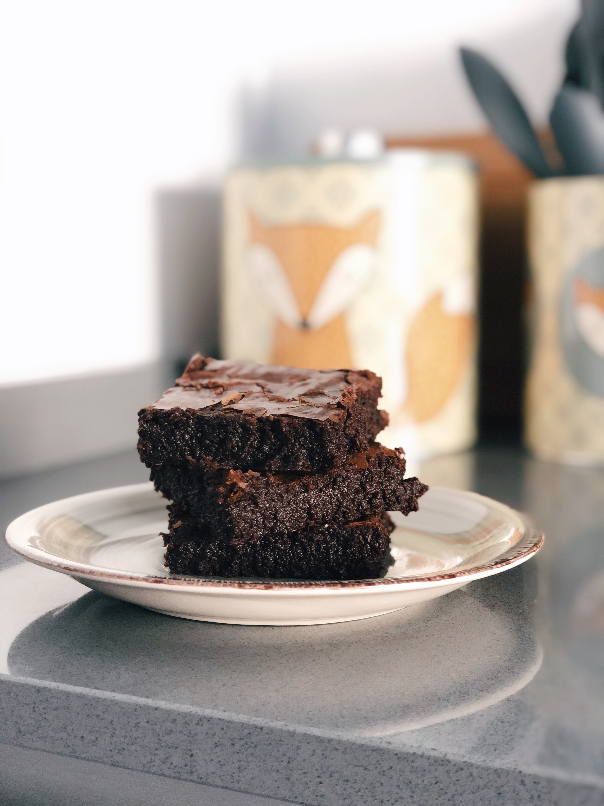

Black Bean Brownies

A healthy take on your favorite dessert!
These brownies are sure to please any crowd, with their sweet and indulgent flavours, bringing back childhood memories.
However, no one will guess the secret ingredient making these brownies a slight healthier version then the ones you grew up with: Black beans!
Full of fibre, high in protein, and absolutely delicious, these brownies will be an absolute dream in your mouth!
Ingredients
- 1.5 cups cooked black beans (or 1 can)
- 3 tbsp coconut oil
- 3 tbsp almond butter
- 2 eggs
- 2 tsp vanilla extract
- 1/2 cup coconut sugar
- 1/4 cup cocoa powder
- 6 tbsp coconut flour
- 1 tsp baking powder
- 2/3 cups dark chocolate chips
- 2/3 cup chopped hazelnuts or walnuts as topping (optional)
Directions
- Preheat the oven to 375°. Line a 9"x9” brownie pan with parchment paper & lightly spray the paper with olive oil
- Puree the black beans in a food processor fitted with a steel blade until smooth. Add the coconut oil, almond butter, eggs, and vanilla and pulse a few times
- Then, add the coconut sugar, cocoa and coconut flour and mix well. Fold in baking powder and blend just until mixed. Gently stir in the remaining cup of chocolate chips.
- Pour it all into the prepared pan and, if you’re feeling nutty, top with hazelnuts or walnuts. Bake for about 25 minutes. Serve warm.
Recipe credit Be Well by Kelly